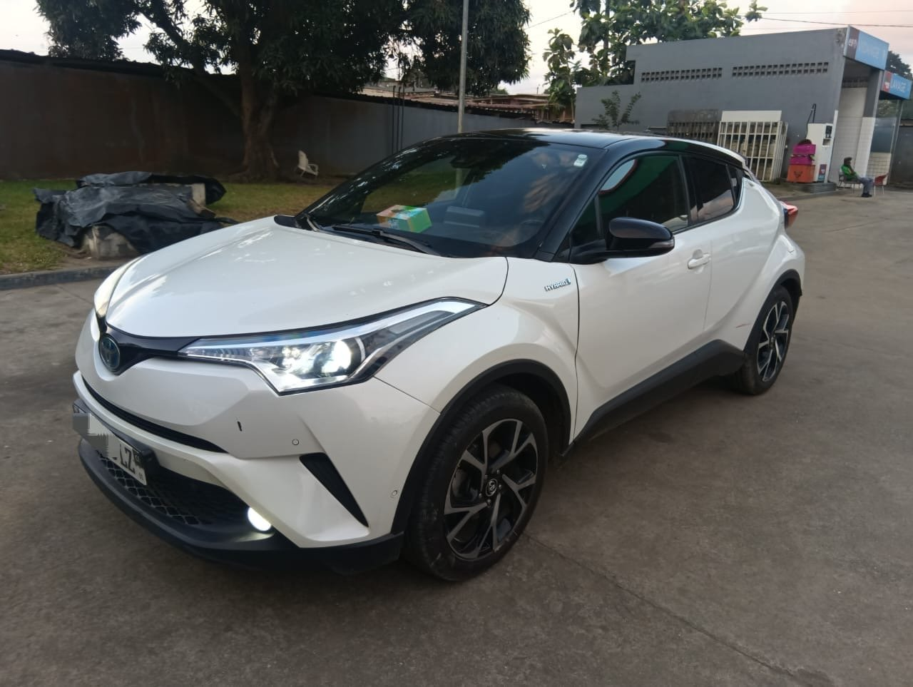

À vendre · Rapide rapide
Toyota C-HR — 2019/2020
2019/2020 · Essence hybride · Automatique · 66 000 km
11 000 000 FCFA
Prix légèrement négociable.
Année annoncée2019/2020
Kilométrage66 000 km
CarburantEssence hybride
BoîteAutomatique
Places assises5
DémarrageStart
Caméra de reculOui
ClimatisationD’origine
JantesAlliage
DocumentsÀ jour
Full options selon le vendeur. Démarrage Start, caméra de recul, jantes en alliage et climatisation d’origine. Intérieur très propre et documents à jour.
Le vendeur annonce un véhicule sans défaut mécanique, prêt à rouler.
Position : contactez-nous pour connaître le lieu et organiser une visite.